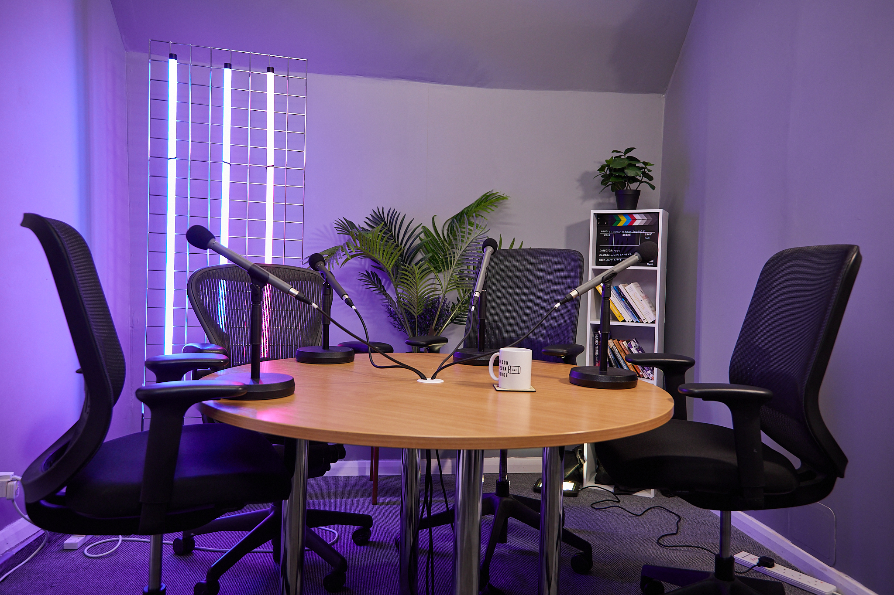

Starting a podcast in London has never been more achievable — or more rewarding. The city is home to a thriving podcast community, a wealth of potential guests, and professional studios that make sounding great effortless. But where do you actually begin? This complete beginner's guide walks you through every step of launching a podcast in London, from the first idea to your first published episode and beyond.
Step 1: Define Your Concept
Every successful podcast starts with a clear idea. Ask yourself three questions: What is my show about? Who is it for? Why would they keep coming back? The most engaging podcasts occupy a specific niche — whether that is London entrepreneurs, true crime, football culture, or wellness — rather than trying to appeal to everyone. A focused concept makes it easier to attract loyal listeners and book relevant guests.
Step 2: Plan Your Format and Episodes
Decide on your format early. Will it be solo monologues, co-hosted conversations, or interview-based? How long will episodes run, and how often will you release them? Consistency matters more than frequency — a reliable weekly or fortnightly schedule builds trust with your audience. Before recording, sketch out a season's worth of episode topics so you never sit down without a plan.
Step 3: Choose the Right Studio
This is where many London podcasters make or break their show. Recording at home with a USB microphone is possible, but background noise, poor acoustics, and amateur video hold you back from day one. Booking a professional podcast studio instantly elevates your production: treated acoustics, broadcast microphones, multi-camera video, and an engineer who handles the technical side. London Media Lounge offers 13 distinct sets, professional lighting, and an onsite engineer with every session — so even your very first episode looks and sounds like an established show.
Step 4: Record With Confidence
On recording day, preparation pays off. Arrive with your talking points, test your sound levels, and remember that conversation flows best when you relax. In a staffed studio, the engineer manages the technology so you can stay present with your guest. Capture both audio and video — even if you launch as an audio show, having video clips ready for social media is one of the fastest ways to grow.
Step 5: Edit and Polish
Editing turns a good recording into a great episode. Trim dead air, remove distracting filler, balance the audio levels, and add a short intro and outro. If editing is not your strength, many studios — including London Media Lounge — can handle production for you, delivering a finished episode and social clips ready to publish.
Step 6: Publish and Distribute
To get your podcast onto Spotify, Apple Podcasts, and Amazon Music, you will need a podcast host that generates an RSS feed — popular options include Spotify for Podcasters, Buzzsprout, and Acast. Upload your episode, write a compelling title and description with relevant keywords, and submit your feed to the major directories. Do not forget YouTube, which is now one of the largest podcast platforms in the world.
Step 7: Grow Your Audience
Launching is only the beginning. Cut short, attention-grabbing clips for TikTok, Reels, and Shorts — these are the single biggest driver of new listeners. Invite guests who will share the episode with their own audiences, engage with your listeners, and stay consistent. Growth compounds over time for creators who keep showing up.
Ready to Launch?
Starting a podcast in London is a journey, and the right studio makes every step easier. If you want to launch with professional quality from episode one, book your session at London Media Lounge and let our team help you bring your show to life.